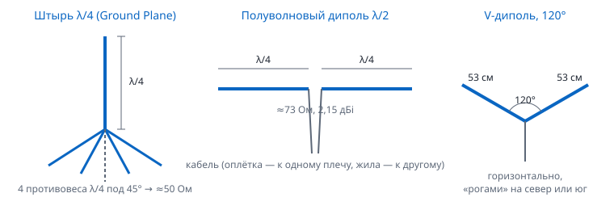

Содержание › Основы радиоприёма
Антенны и кабели
Хорошая антенна в хорошем месте даёт больше, чем самый дорогой приёмник. Антенна работает лучше всего, когда её размер связан с длиной волны принимаемого сигнала.
Длина волны#
λ (м) = 300 / f (МГц) λ/4 (см) = 7500 / f (МГц)
Например, 145,8 МГц: λ = 300 / 145,8 = 2,06 м, четверть волны — 51,4 см. В реальном проводнике волна идёт чуть медленнее, поэтому физическую длину берут на 3–5 % короче (коэффициент укорочения ≈0,95): получается около 49 см. Точнее подгоняют по прибору (КСВ-метр, NanoVNA) или по уровню сигнала.
Основные антенны#

Штырь λ/4 (Ground Plane)#
Вертикальный стержень длиной λ/4 и «земля» под ним: металлическая крыша автомобиля или 3–4 противовеса той же длины. С противовесами, опущенными под 45°, сопротивление ≈50 Ом. Круговая диаграмма в горизонтальной плоскости, вертикальная поляризация — для авиации, раций, ретрансляторов, ADS-B.
Полуволновый диполь#
Два плеча по λ/4, кабель подключён в середине. Усиление 2,15 dBi, сопротивление ≈73 Ом (кабель 50 или 75 Ом — без разницы для приёма). Диполь из комплекта V4 — именно он: телескопические плечи выдвигаются под нужную частоту. Принимает лучше всего поперёк плеч, хуже — вдоль них.
V-диполь для «Метеора» (137 МГц)#
Диполь, плечи которого разведены на 120°, лежит горизонтально. Такая форма даёт диаграмму, «смотрящую» в небо, и хорошо принимает спутник на большей части пролёта.
- Длина каждого плеча — 53 см (точнее 53,4 см) для 137,1–137,9 МГц.
- Раствор «V» направьте на север или на юг (по направлению пролётов «Метеора»).
- Поставьте как можно выше и под открытым небом: балкон, крыша, участок без деревьев.
- Комплектный диполь V4 подходит: выдвиньте длинные телескопы на 53 см и разведите на 120°.
QFH и турникет — круговая поляризация#
Спутники вращаются и передают с круговой поляризацией (у «Метеора» — правой). Линейная антенна теряет на этом ~3 dB и даёт замирания. QFH (квадрифилярная спираль) — две перекрученные петли, ровно принимает всё полушарие неба — лучшая простая антенна для 137 МГц; размеры удобно рассчитать калькулятором (например, jcoppens.com). Турникет — два скрещённых диполя, запитанных со сдвигом 90°: проще QFH, но хуже у горизонта.
Дискон#
Диск сверху и конус снизу: широкополосная (обычно 25–1300 МГц) вертикальная антенна без усиления. Хороша для обзора эфира и сканирования, но на каждой конкретной частоте уступает настроенному штырю.
Яги#
Направленная антенна: вибратор, рефлектор сзади и директоры спереди. Усиление 7–15 dBi, узкий луч. Для ручного слежения за МКС и любительскими спутниками (двухдиапазонная 2 м / 70 см), для DVB-T2 — на телебашню, для дальнего ADS-B — в нужную сторону.
Готовые размеры#
| Частота | Что | λ | λ/4 теория | Штырь / плечо диполя (×0,95) |
|---|---|---|---|---|
| 100 МГц | FM-радио | 3,00 м | 75 см | ≈ 71 см |
| 125 МГц | авиа | 2,40 м | 60 см | ≈ 57 см |
| 137,5 МГц | «Метеор-М» | 2,18 м | 54,5 см | ≈ 52–53 см (V-диполь 53,4 см) |
| 145 МГц | 2 м, МКС, APRS | 2,07 м | 51,7 см | ≈ 49 см |
| 433,9 МГц | LPD, 70 см | 69,1 см | 17,3 см | ≈ 16,4 см |
| 446 МГц | PMR446 | 67,3 см | 16,8 см | ≈ 16 см |
| 1090 МГц | ADS-B | 27,5 см | 6,9 см | ≈ 6,5 см |
| 1691 МГц | «Электро-Л» | 17,7 см | 4,4 см | (нужна тарелка) |
У комплектного диполя V4 длинные телескопы (примерно 23–100 см) — для ~70–300 МГц; короткие (примерно 5–13 см) — для ~550–1500 МГц, в том числе 1090 МГц. Для 433–446 МГц выдвиньте короткие полностью: чуть короче нужного, но работает.
Коаксиальный кабель#
Чем выше частота и тоньше кабель, тем больше потерь. Потери кабеля до первого усилителя напрямую ухудшают чувствительность (КШ).
| Кабель (на 10 м) | 100 МГц | 435 МГц | 1090 МГц | Комментарий |
|---|---|---|---|---|
| RG-174 (тонкий, 2,8 мм) | ≈ 3 dB | ≈ 6 dB | ≈ 9–10 dB | только короткие перемычки |
| RG-58 (5 мм) | ≈ 1,6 dB | ≈ 3,5 dB | ≈ 5,5 dB | комплектный кабель антенн |
| RG-6 / SAT-703 (75 Ом, 7 мм) | ≈ 0,7 dB | ≈ 1,4 dB | ≈ 2,2 dB | дешёвый спутниковый — хорош для приёма |
| LMR-400 / 10D-FB (10 мм) | ≈ 0,4 dB | ≈ 0,9 dB | ≈ 1,4 dB | для длинных спусков |
Значения ориентировочные (по справочным данным производителей). 75-омный кабель на 50-омном входе теряет на рассогласовании менее 0,1 dB — для приёма это несущественно.
Правило: длинный кабель — толстый, а если нельзя — МШУ у антенны.
МШУ (LNA)#
- Малошумящий усилитель с КШ ~0,5–1 dB и усилением ~20 dB ставят прямо у антенны. Он «фиксирует» хороший КШ системы, и потери кабеля после него почти не важны.
- Питание — по кабелю через bias-T приёмника (галочка «Bias-T»; например, 4,5 В у RTL-SDR Blog V4).
- Широкополосный МШУ в городе усиливает и мешающие станции — лучше МШУ со встроенным фильтром под свою задачу (1090 МГц для ADS-B, 137 МГц для «Метеора», 1691 МГц для «Электро-Л»).
- После МШУ уменьшите усиление приёмника на 10–20 dB, иначе перегрузите его.
Фильтры#
- FM-режектор (полосно-заграждающий 88–108 МГц) — главный фильтр в городе: убирает мощное FM-вещание, которое перегружает приёмник при приёме авиа, 2 м и «Метеора».
- Полосовой фильтр (например, ПАВ-фильтр 1090 МГц) пропускает только нужный диапазон.
- ФВЧ/ФНЧ — отрезают всё выше/ниже частоты среза: например, ФНЧ 30 МГц для КВ.
Поляризация#
| Поляризация | Где |
|---|---|
| Вертикальная | авиасвязь, ADS-B, рации, ретрансляторы 2 м / 70 см, APRS, DMR, CB |
| Горизонтальная | FM-вещание (часто смешанная), ТВ (уточните для своего передатчика), дальняя SSB-связь на УКВ |
| Круговая | спутники: «Метеор-М», «Электро-Л», часть любительских |
Несовпадение линейных поляризаций (вертикальная антенна — горизонтальный сигнал) теоретически ослабляет сигнал на 20 dB и больше; линейная антенна на круговой сигнал — на 3 dB.
Где ставить#
- Выше и на улицу. На УКВ и выше связь идёт почти по прямой видимости: каждый этаж и каждое окно без металлизированной плёнки помогают. Стены из бетона ослабляют 1090 МГц на 10–20 dB.
- Подальше от металла (перила, отливы, водостоки) хотя бы на четверть волны.
- Для спутников — открытое небо; горизонт важен меньше, чем зенит.
- Для КВ — провод подлиннее и подальше от проводки дома.
Помехи от электроники#
В квартире главный враг — не слабый сигнал, а шум от бытовой техники: светодиодные лампы и ленты, импульсные блоки питания (зарядки ноутбуков и телефонов), мониторы, роутеры, порты и хабы USB 3.0, инверторы, «умные» счётчики. Признаки: широкие «гребёнки» пиков через равные промежутки, поднятая дорожка шума, жужжание на КВ.
- Найдите источник: выключайте приборы по одному (или запитайте ноутбук от батареи) и смотрите на спектр.
- Отнесите приёмник и антенну подальше — USB-удлинитель на 1–3 м.
- Наденьте ферритовые кольца-защёлки на USB-кабель и сетевые провода шумящих приборов, а на коаксиальный кабель у антенны — несколько ферритов (подавляют синфазный ток по оплётке).
- Замените конкретную шумящую лампу или зарядку — часто это решает всё.
См. также: Усиление, Нет сигнала, Приём «Метеора».